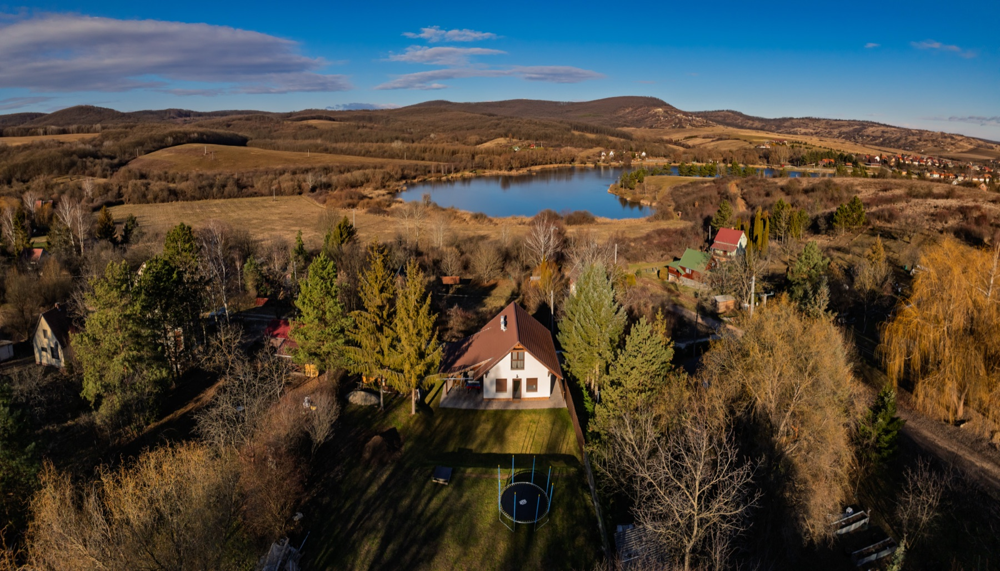
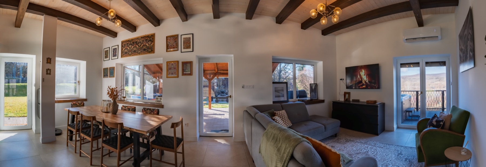
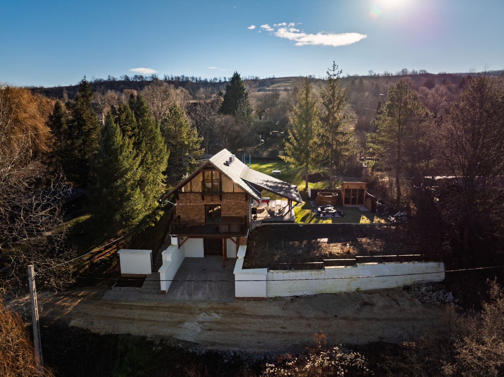
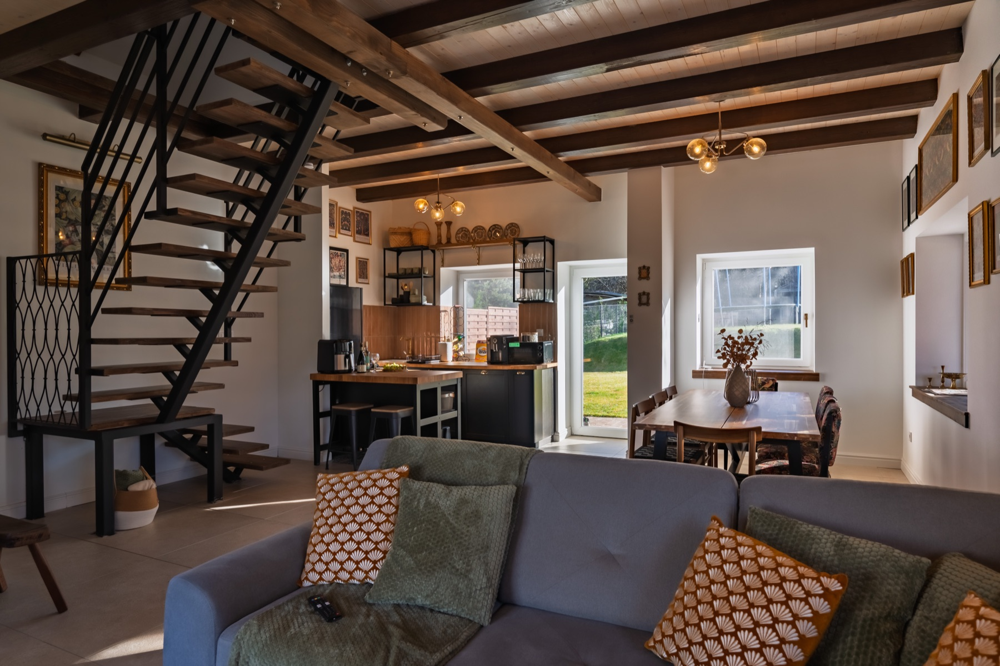

Varbó · A Bükk lábánál
Közel a természethez.
Közel egymáshoz.
Egy teljes ház, privát wellness és zavartalan panoráma, legfeljebb 6 vendégnek.
Lassíts le
Hely, ahol a csendnek is tere van.
A Varbói Loft Vendégház a természet és a modern kényelem találkozása. Világos, karakteres terek, tóra néző terasz és egy kert, ami csak a tietek.
Romantikus páros pihenéshez, családi kikapcsolódáshoz vagy baráti hétvégéhez. Aggtelek, Lillafüred, horgásztavak és a kéktúra útvonala is könnyen elérhető.


Privát wellness
Meleg víz. Hűvös levegő. Semmi sietség.
A wellness élmény itt nem közös tér és nem időponthoz kötött program. A kert, a terasz és minden szolgáltatás kizárólag a vendégház lakóié.
- 01JakuzziPanorámás terasz
- 02Finn szaunaKerti pihenőtér
- 03Fatüzelésű dézsaTermészetes élmény
Galéria
Nézz körül.
Árak
Egyszerű, átlátható.
A szabad időpontokról és a tartózkodás részleteiről közvetlenül adunk tájékoztatást.
Helyszín
Karnyújtásnyira a Bükk.
A vendégház Varbón, a tó közelében található. Az útvonaltervezéshez nyisd meg a pontos címet a térképen.
3778 Varbó, Csuka út 4. Útvonaltervezés
Foglalás
A következő lassú reggel itt kezdődhet.
A 2026-os foglalási naptár nyitva. Írd meg az érkezés és távozás tervezett dátumát, vagy hívj minket.